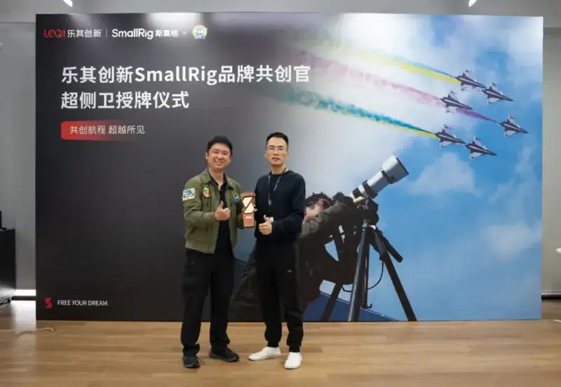
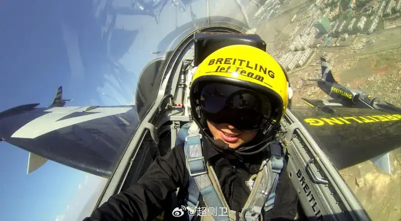
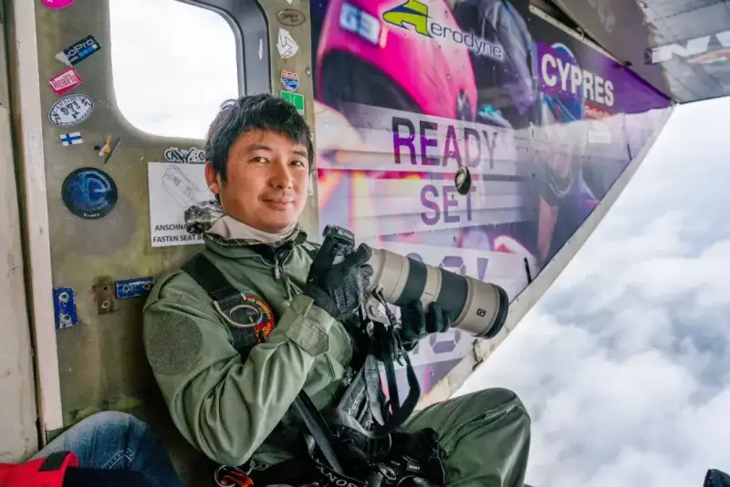
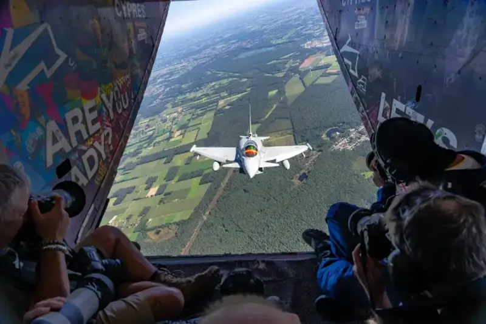
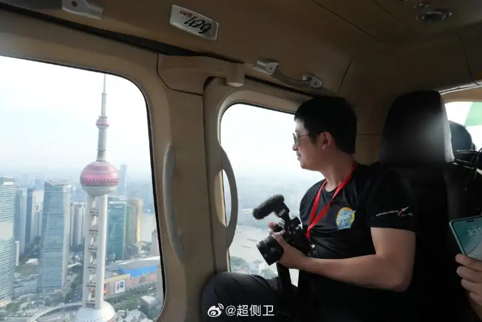
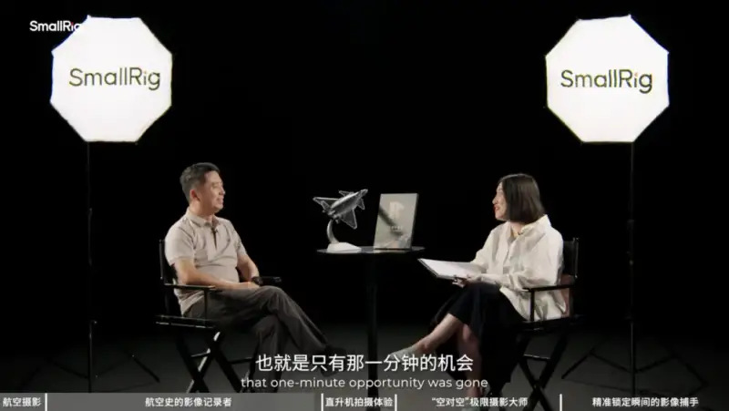
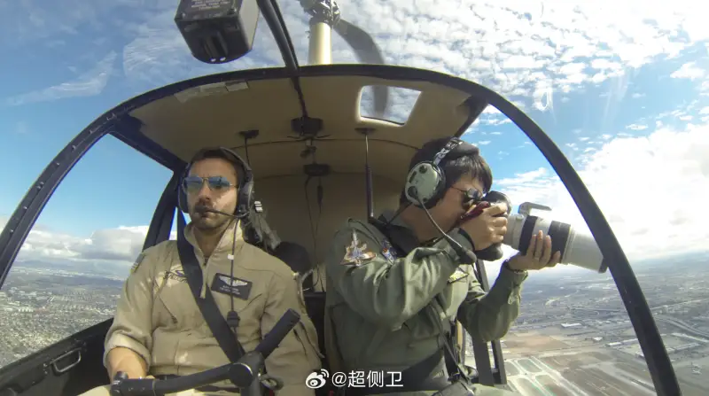

Leqi Innovation: SmallRig Founder and CEO Zhou Yang presents the plaque to Chao Cewei
2025 11 13, Leqi InnovationSmallRignames leading Chinese aviation photographer Chao Cewei (Chen Cheng) its Brand Co-creation Officer. This partnership marks a deep merge between imaging equipment manufacturing and professional photography. The two sides will cooperate on aviation image content, product R&D, and aviation culture. Centered on user needs and guided by pro scenes, they will drive new technology and a better experience in aviation and outdoor photography gear.

Chao Cewei shoots in the air

Chao Cewei shoots in the air
Where professionalism and passion meet
Leqi InnovationSmallRigis known as a creator of global imaging-scene product ecosystems. It has worked in imaging gear for over ten years. It focuses on the real needs of photographers in different scenes. Through modular design, light materials, and easy features, it gives the worldimagingcreators, fromimaging support gearto full shooting solutions, afull-sceneproductecosystemmatrix.
Leqi InnovationSmallRighas always held“the user comes first” as its value, and“users co-create” as its way to grow,，Leqi InnovationSmallRig founder andCEOZhou Yang said:“Co-creation is in Leqi InnovationSmallRig's brand DNA, and the key to the company's growth. Chao Cewei is not only a world leader in aviation shooting, he is alsoSmallRig (SmallRig) gear. He has long explored, tested, and understood aviation and aerospace imaging scenes.Chao Cewei's extreme demands on gear match SmallRig's scene-based innovation strategy. This lays a firm base for this Co-creation Officer partnership.In future, the two sides will keep exploring aviation and aerospace imaging scenes, and give users better scene-based solutions.”
Public records show thatChao Cewei (Chen Cheng), asa pioneer of Chinese air-to-air photography, has worked for over10 years and shot almost every aircraft type except the Airbus BelugaBeluga. He has witnessed the Boeing777, AirbusA380,A350, and China'sC919 milestone aircraft be born and enter service;Chao Ceweiwas an aircraft maintenance engineer who mastered aviation mechanics, then became a pro photographer. With the belief thata good-looking plane must be a good plane, he uses his camera to record the rise of the Chinese aviation industry. HisC919 air-to-air images passed a million views online, and became a key window for the public to understand aviation tech.
Chao Cewei's work

Chao Cewei's air-to-air work
From imagingproductco-creation to content ecosystem building
We know thatChao Cewei and Leqi InnovationSmallRig began working together because pro aviation imaging needs and imaging gear innovation fit closely.At the plaque ceremony,as a Chinese“air-to-air” aviation pioneer, Chao Cewei spoke about the strict needs of aviation shooting for light gear and expandable features.SmallRig (SmallRig) light gear played a key role in multi-camera aviation shoots. Chao Cewei said that in aviation shoots,SmallRig (SmallRig) cage expansion kits, docks,Type-C fast-charge batteries are core gear. With expansion, one camera position can record stills and4K4K video at the same time. This system of scene solutions greatly speeds up creation.

Chao Cewei
The co-creation goes beyond gear. It reaches into how they create content. In the“SmallRigPresence Imaging People Talk deep interview series, Leqi InnovationSmallRig and Chao Cewei discussed aviation imaging. He said, On this planet, except for that one plane (the AirbusA330-700 transport plane), I have shot every plane. In the air, on the ground, in museums, all kinds, plus test and trial planes. Chao Cewei said at theSmallRig Presence interview event.

SmallRig Presence talks with Chao Cewei
In the interview, Chao Cewei shared his path as an aviation photographer. From hard, risky air-to-air shots to careful plans as precise as fixing a plane, he has recorded and seen the growth of Chinese aviation and spaceflight, and shown his skill as a senior aviation photographer.
Explore imaging-scene innovation through brand co-creation
Being present in aviation photography is not only reaching a place. It is keeping professionalism and passion on all the way, Chao Cewei said at the ceremony. This partnership will let more people feel the beauty of flight through reliable gear+ and sharp images.Zhou Yang stressed that from Chinese wildlife photographer Xi Zhinong to aviation pioneer Chao Cewei (Chen Cheng), in futureSmallRig (SmallRig) will keep using the Co-creation Officer model to link creators in many fields, and move products from meeting needs to anticipating needs.

Chao Cewei shoots in the air

Chao Cewei shoots in the air
This partnership is not onlySmallRig (SmallRig) a brand and a well-known aviation photographer working together. It is also a new step in the imaging industry user co-creation model in aviation shooting.. It is a new exploration. When gear makers truly listen to creators, and pro photographers help define products, imaging scenes scenes and artistic expression are being rewritten.